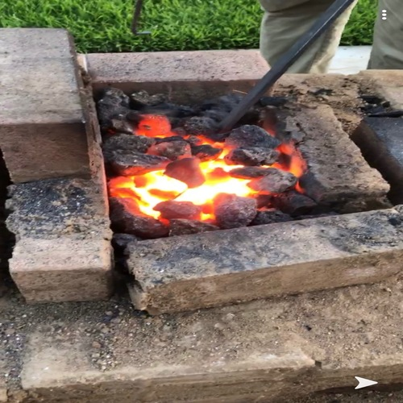
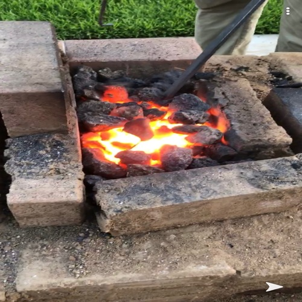
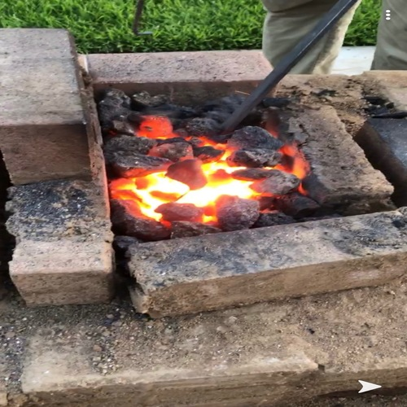

David William
When my family and I immigrated from Egypt to the US when I was 13, I was completely overwhelmed and shocked by this new transition. The two environments seemed like polar opposites and resulted in cultural, social, and academic obstacles. These obstacles were dramatically amplified when it came time to leave my family and small community in Central Valley California and attend university at UCR. Academically, I faced barriers as I adjusted from one educational system to another. While in Egypt students are rewarded for the quantity they memorized, the American system values a student’s ability to understand and apply information. As a result, translating my efforts into success or failure became difficult due to their contrasting scales. However, I was able to surpass these hardships as I enrolled in advanced classes and achieved exceptional GPA’s. I challenged myself to not only develop academically but to also develop as a team worker and get a better understanding of the community around me by participating in research, clinical volunteering, nonclinical volunteering and eventually becoming a leader. Furthermore, my barrier in English was the most predictable struggle I would face when moving to America. To overcome it, I placed additional effort and took advantage of every resource given both in and out of my school in order to improve it. I felt empowered each time I overcame a disadvantage which I worried would define me. Overcoming these obstacles as my undergraduate studies progressed, has helped me grow as an open-minded person coming to America. Since I can relate to the isolation experienced by immigrants, I am able to reach an understanding with a variety of people.
I am quite experienced working in a team in many different environments. I have the opportunity to be working in a plant genetic research lab on campus in which I have my own project, but I spend most of my time aiding my coworkers in their projects as much as they need it, such as if their projects are due before mine or if their job requires more than one person. I help in running their experiments, watering their plants if they cannot make it to the lab or if they forget, I help wash and clean the workplace and equipment, run tests on emergency supplies, etc. whenever I get the opportunity. At the COPE health scholars program, I help the nurses, physicians, and other staff as much as possible, such as fetching all the supplies needed to change rooms/ beds, help clean the patients, feed patients, bring snacks and water to patients, etc. in order to help ease the staff’s workload so they can focus on other things such as charting. If I have stocked everything and helped all the nurses, I go around every 10 minutes asking every staff member individually if there is anything I can assist with. During high school, I participated in football and track in which I helped make sure that all my teammates were familiar with the play’s and the techniques before we moved onto anything new in practice so that we all could be on the same page and no one feels lost. I understood that we would only succeed at running the play football or scoring the marks we needed in track if we are all in sync with no one left out. Teamwork in different environments has allowed me to develop strong communication skills which have helped me grow as a leader in the COPE Health Scholar program at Kaiser Permanente Riverside. I am the Department Coordinator for the MedSurg floor in which I oversee, train, schedule shifts, schedule meetings, answer any emails and concerns ( as soon as possible within 24 hours) for all the scholars volunteering on the MedSurg Floor (5 East). Participating in the above teamwork environments has helped me understand that a good quality in a leader would be to communicate while being firm, in a soft-toned manner as to not come out as authoritative but as a fellow peer trying to work together to solve the issues or any knowledge gaps that the scholars or anyone may have regarding the program, their schedules, their scope of practice, etc, and to treat any misunderstandings or mistakes as a learning opportunity while also being firm regarding policies and aware of those who could abuse leniency. Participating in research, volunteering at a hospital, volunteering at a food bank, managing volunteers on a hospital floor, while maintaining my academics have helped me build strong time management skills where I am able to fit everything into my schedule and succeed in finishing all of my responsibilities on time and with quality, while also having time to spare to work on my hobbies and other interests.
In my free time, I enjoy spending time with family and friends as well as working on my hobbies. Some of my hobbies include: forging metal objects in my backyard, growing different fungi strains, maintaining my garden as well as learning to play the Arabic Lute (Oud).
Experience
Undergraduate Research Assistant
• Plant Genetics Lab.
• Involved in projects analyzing expressivity of fifteen salt tolerance
genes in plant varieties of spinach, peppers, eggplants, and tomatoes.
Health Scholar
• Hands-on clinical experience.
• Aid in patient care such as helping feed, move, ambulated, bathe,
discharge patients, etc.
• Help nurses, physicians, and other hospital staff with other needed
tasks such as material stocking, specimen transfers, cleaning the
workplace, etc to help ease their work day.
• Rotations In MedSurg, Urgent Care, Emergency and ICU departments.
• Love to interact with patients and keep them company.
Volunteer
• Help package, sort, stock, donated food at the warehouse.
Education
University of California Riverside
Portfolio
.jpg)
.png)
.jpeg)
.png)
.jpg) 

